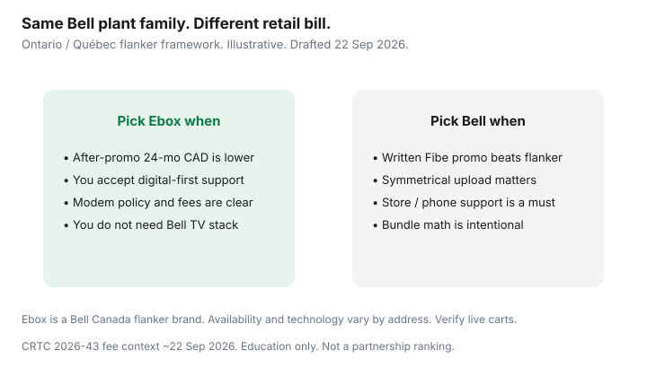

Internet · Canada
Ebox vs Bell in Ontario and Québec: When the Flanker Is the Better Buy
Ebox is easy to scroll past because the logo is not on every bus shelter. That is the point of a flanker: same corporate family as Bell, different retail brand, often a simpler internet-focused pitch. Ontario and Québec households who only price “Bell Fibe” leave money on the table when the flanker qualifies at the address and the after-promo math is cleaner.
This is a decision framework, not a permanent price list. Carts move. Education only.
Disclosure: Saving Optimizer has no Bell or Ebox partnership and does not invent commissions. ISP, modem, and mesh mentions are offer types only. Availability is address-specific.
Key takeaways
- Ebox is a Bell Canada flanker — related corporate family, separate retail plans, support channels, and promos. It is not a random third-party reseller legend.
- Compare 24-month CAD after the promo, modem policy, and support model — not the download tile alone.
- Parent Bell still wins when a written Fibe promo, symmetrical upload you actually need, or store support beats the flanker total.
- Québec and Ontario catalogues differ. French-language support expectations and technology mix (fibre versus other last-mile labels) vary by suite — run both address tools.
- Watch contract length, ETF language after CRTC 2026-43 (activation fees largely banned from 12 Jun 2026; term ETFs can remain), and add-on TV you did not ask for.
What Ebox is relative to Bell (same plant, different brand)
Think of Ebox the way Québec shoppers already think of Fizz versus Videotron: a lighter brand aimed at people who want internet without the full incumbent bundle theatre. Ebox markets fibre and other services under its own site and app-style support. The last mile may still sit in the Bell ecosystem depending on the product and address. What you buy is the retail contract — price, equipment rules, and who answers when Wi-Fi dies on a Sunday.
Do not assume every Bell Fibe address automatically gets every Ebox tier, or the reverse. Qualifiers disagree. Screenshot both.
Price, modem, and support differences that matter
- Price shape — Flankers often lean on simpler monthly figures or shorter promo stories. Bell public Fibe cards frequently pair a term saving with a higher “without” price. Build 24-month totals either way.
- Modem / ONT — Fibre households may be stuck with provider gear on the optical side. Ask what you can own versus rent, and whether a gateway fee is inside the quoted monthly.
- Support — Bell sells stores and phone depth. Ebox skews digital. If someone in the house needs a human on hold, price that preference honestly.

When the parent Bell promo still wins
Stay with (or switch to) Bell when:
- The written Fibe rate plus credits beats Ebox on 24-month CAD at the same upload class.
- You need a mobility credit, TV, or other bundle you have already priced on purpose with the bundle guide.
- Winback on Bell — see the Fibe winback playbook — emails a number Ebox will not match.
Québec vs Ontario availability quirks
Québec shoppers should also price Videotron and Fizz on cable plant before treating Bell/Ebox as the only fork — the Fizz versus Videotron and Montréal bill guides cover that cast. Ontario condo fibre versus copper labelling still trips people; read the upload on the quote. Language preference for support is a real household constraint in Québec — confirm how each brand staffs French and English.
Contract length and fee gotchas
As of ~22 Sep 2026, CRTC 2026-43 has been in force since 12 Jun 2026 for most activation and plan-change fees. That does not delete every installment plan or fixed-term ETF. Ask for the Critical Information Summary: term, ETF schedule declining toward month 24, promo end date, and equipment return rules. A flanker “no nonsense” homepage is not a substitute for that PDF.
Decision table: flanker vs parent
| Factor | Ebox (flanker) | Bell (parent) |
|---|---|---|
| 24-month CAD | Often simpler; verify after any credit | Promo then regular; model both |
| Upload / tech | Whatever the qualified tier lists | Fibe uploads can justify a premium |
| Support | Digital-first | Phone / store depth |
| Bundles | Internet-led | TV / phone / mobility hooks |
| Walk if | Parent email wins or support model fails you | Flanker total wins and you accept the channel |
Sources & date stamps
- Ebox and Bell consumer sites — plan cards and address tools (verify live; drafted context ~22 Sep 2026).
- CRTC Internet Code; CRTC 2026-43 fee measures effective 12 Jun 2026.
- CCTS — dispute path after you escalate with the ISP.
- Saving Optimizer — Bell Fibe winback; Fizz vs Videotron; compare by address.
Frequently asked questions
Is Ebox just Bell with a different logo?
It is a flanker in the Bell Canada family: related ownership, separate retail plans and support. You still compare contracts and address qualification separately.
Can I keep my Bell modem on Ebox?
Do not assume it. Ask each brand which gateways are approved and whether fibre ONT gear must stay theirs. Return unused rental equipment on time.
Does switching to Ebox waive a Bell ETF?
No. Leaving a fixed-term Bell contract can still trigger an ETF if one applies. Read your schedule before you port the household.
Should Montréal households only compare Ebox and Bell?
No. Price Videotron and Fizz when cable plant is an option. The flanker-versus-parent question is one fork, not the whole city.
What if Bell’s promo year looks cheaper?
Model month 13–24. If the cliff is steep and Ebox’s flat-ish path wins the full window, the flanker is the better buy even if year one looks quieter.